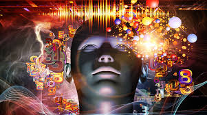
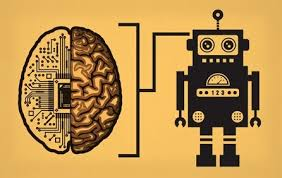
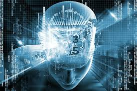
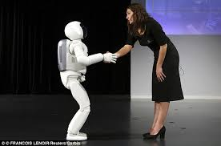

The computer revolution has influenced everyday matters from the way letters are written to the methods in which our banks, governments, and credit card agencies keep track of our finances. The development of artificial intelligence is just a small percentage of the computer revolution and how society deals with, learns, and incorporates artificial intelligence. It will only be the beginning of the huge impact and achievements of the computer revolution.
   A standard definition of artificial intelligence, or AI, is that computers simply mimic behaviors of humans that would be regarded as intelligent if a human being did them. However, within this definition, several issues and views still conflict because of ways of interpreting the results of AI programs by scientists and critics. The most common and natural approach to AI research is to ask of any program, what can it do? What are the actual results in comparison to human intelligence? For example, what matters about a chess-playing program is how good it is. Can it possibly beat chess grand masters? There is also a more structured approach in assessing artificial intelligence, which began opening the door of the artificial intelligence contribution into the science world. According to this theoretical approach, what matters is not the input-output relations of the computer, but also what the program can tell us about actual human cognition (Ptack, 1994).
From this point of view, artificial intelligence can not only give a commercial or business world the advantage, but also a understanding and enjoyable beneficial extend to everyone who knows how to use a pocket calculator. It can outperform any living mathematician at multiplication and division, so it qualifies as intelligent under the definition of artificial intelligence. This fact does not entertain the psychological aspect of artificial intelligence, because such computers do not attempt to mimic the actual thought processes of people doing arithmetic (Crawford, 1994). On the other hand, AI programs that simulate human vision are theoretical attempts to understand the actual processes of human beings and how they view and interpret the outside world. A great deal of the debate about artificial intelligence confuses the two views, so that sometimes success in artificial intelligence's practical application is supposed to provide structured or theoretical understanding in this branch of science known as cognitive science. Chess-playing programs are a good example. Early chess-playing programs tried to mimic the thought processes of actual chess players, but they were not successful. Ignoring the thoughts of chess masters and just using the much greater computing powers of modern hard wares have achieved more recent successes. This approach, called “brute force,” comes from the fact that specially designed computers can calculate hundreds of thousands or even millions of moves